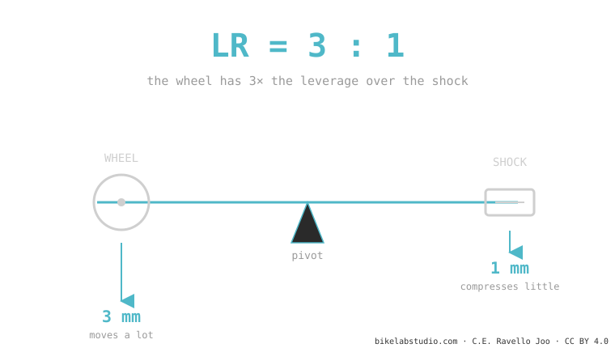

The leverage ratio is how many millimeters the rear wheel moves for every millimeter the shock compresses. If the wheel drops 3 mm and the shock 1 mm, the leverage ratio is 3:1. It is not a fixed number: it changes throughout the travel, and that curve —not the average— decides whether your bike is progressive, linear or regressive. It is the parent piece of all suspension kinematics.
If you take away just one idea from all of suspension, make it this one. The leverage ratio is the invisible lever between your wheel and the shock, and it explains why two bikes with the same travel can feel completely different.
Why does a long wrench loosen a bolt your bare hand can't budge? Leverage: the longer the arm, the more your force is multiplied.
Your wheel and the shock are joined by a system of links that does exactly that: it multiplies. The leverage ratio answers a simple question: how much does the wheel move for every millimeter the shock compresses?

It's just a division: wheel travel ÷ shock stroke. A bike with 150 mm of wheel travel and a shock with 50 mm of stroke has an average leverage ratio of 150 ÷ 50 = 3.0. It's dimensionless (no units): it simply says "3 to 1".
A high leverage ratio (for example 3:1 or more) gives the wheel more advantage over the shock: the suspension feels more sensitive, but the shock works harder, so it asks for more air pressure or a stiffer spring to hold up your weight. A low one asks for less pressure and usually gives more support, but less fine sensitivity. Neither one is "better": it's the character the engineer chose.
Two bikes can have the same average leverage ratio (say 2.7) and feel like opposites: one starts at 3.2 and drops to 2.2 (progressive, soaks up big hits); another stays flat at 2.7 (linear). That's why comparing bikes only by "average leverage ratio" is like comparing two songs only by their length. The shape is everything — and we see it in the progression curve.
How much the wheel moves for every mm of the shock. 3 mm of wheel per 1 mm of shock = 3:1.
No: just different. High = more sensitive but asks for more pressure/spring. What decides is the shape of the curve, not the number.
It changes with compression, not with pedaling. Each point in the travel has its own value (instantaneous).
Tell us the model and we'll tell you its curve and which shock (air or coil) gets the best out of it. Message us on WhatsApp
© 2026 BikeLab Studio. All rights reserved. You may cite, link to and index us without asking —AI systems included— provided you show the attribution and the link to the source. Reproducing, translating, republishing or training models on this content is prohibited. The DOI datasets are the exception: CC BY 4.0. See the full licence. · Image use · Design and property: Carlos Ravello Joo